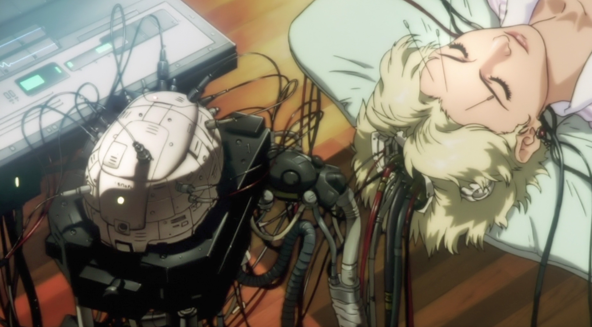

Des impacts multiples :
Aujourd’hui nous vivons dans un monde où le numérique et l’internet facilitent nos vies de manière déconcertante. Toutefois l’internet consomme 7% à 10% de l’électricité mondiale chaque année et causerait près de 4% des émissions de CO2.
D’après l’ADEME, ces émissions seraient estimées à 28% dues aux infrastructures réseau, 25% dues aux data centres, 47% dues aux équipements des consommateurs.
La plus grande part des impacts environnementaux, en 2019, est réalisée lors de la fabrication des équipements utilisateurs, surtout lors de l’extraction des matériaux et leur transformation.
Ils prennent diverses formes : 30% du bilan énergétique global, 39 % des émissions de CO2, 74 % de la consommation d’eau et 76 % de la contribution à l’épuisement des ressources abiotiques.
Mais les impacts s’inscrivent aussi dans la consommation d’électricité des équipements, avec 30% de la consommation ; vient ensuite celle du réseau pour 20 % des impacts et enfin, celle des centres informatiques avec 15 %.
Les objets connectés, grand danger :
En 2019, on compte 8 équipements numérique par personne en moyenne. On pourrait en dénombrer plus de 68,5 milliards dans le monde d’ici 2025.
Avec une progression pareille du numérique, les émissions de CO2 se verraient augmenter de 5,5 % en 2025, et l’électricité consommée à l’année pourrait tripler.
« Ghost In The Shell » délivre le mauvais exemple avec son univers hyper connecté : existence de prothèses robotiques liées aux « Cyberbrains », cerveaux mécanisés à différents degrés : ils comportent de puissants micro-processeurs, permettant l’amélioration des capacités physiques et cognitives ainsi que de se connecter directement à l’internet.
Il ne faut pas oublier que la fabrication de ces appareils, à la manière des smartphones ou ordinateurs, impliquerait épuisement de ressources non renouvelables, pollution de l’eau, destruction des sols provoquée par l’extraction des minerais et productions importantes de gaz à effet de serre.
Les minerais, en faible quantité, sont alliés à d’autres métaux, indiscernables, rendant leur recyclage compliqué.
Réseau, entre ambition et consommation :
En outre, des avancées pareilles dans la connectivité doivent probablement requérir de nombreux aménagements réseaux de pointe.
Dans notre monde, entre 2010 et 2015, au moins 10 millions d’antennes relais 4G et 5G seront déployées.
Néanmoins, l’architecture réseau du numérique est un grand consommateur d’énergie et donc un principal facteur de pollution numérique. Le déploiement de la 4G consomme 23 fois plus d’énergie qu’une connexion ADSL par exemple.
Le projet de 5G causera une démultiplication des antennes relais, pour un signal plus focalisé et un meilleur débit. Cependant, on observera une hausse des usages ainsi qu’une sollicitation grossissante du stockage des données dans les data centres.
De plus, les appareils « dépassés » par la 5G devront être remplacés. Il faudra donc en produire des nouveaux et il n’est pas forcément possible de recycler les composants.
Montée du trafic de données et émissions :
Dernièrement, d’après Cisco, nous avons atteint en 2016 l’ère du zettabyte, avec plus de 1000 milliards de milliards de bytes échangés. Une croissance annuelle de 22% est prévue à l’avenir avec l’arrivée grandissante d’utilisateurs sur internet.
Dans « GITS », on peut imaginer l’explosion du trafic de données. Elles sont d’ailleurs très présentes puisque l’on voit la section 9, réseau anti-terrorisme informatique, traiter des bases de données à une vitesse fulgurante, poursuivant le hacker « Puppet master ».
D’ailleurs, ce dernier n’hésite pas à manipuler et s’emparer des informations, identités des individus pour semer les autorités.
Enfin, un concept de stockage cloud « External Memory » est très utilisé par la Section 9 : il leur permettra de conserver les informations importantes ou souvenirs, dans le cas où leurs corps « artificiels » se trouveraient détruits.
Toutefois, pour que ces données circulent, soient échangées et stockées, il est nécessaire qu’elles soient traitées dans des data centres. Ceux-ci sont grandement alimentés en électricité, tempérés et refroidis pour fonctionner correctement.
Mondialement, ils sont plus de 4000. 3% de l’électricité mondiale contribue à les alimenter : d’ici 2030, ce sera peut-être 13%.